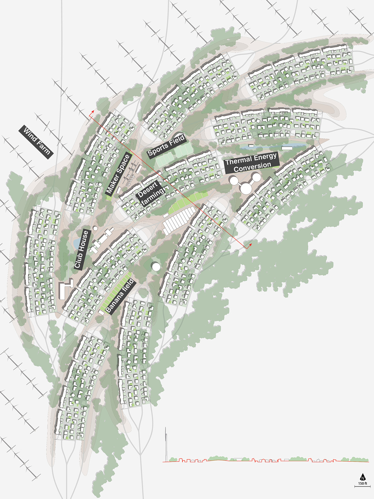
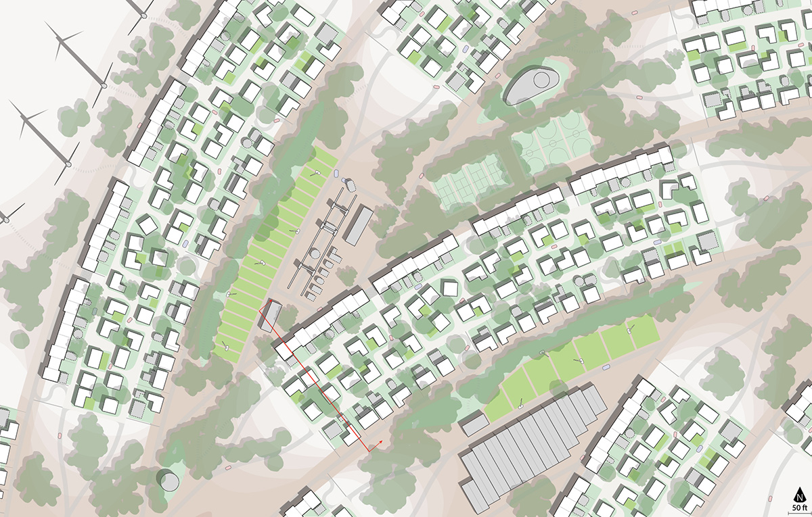
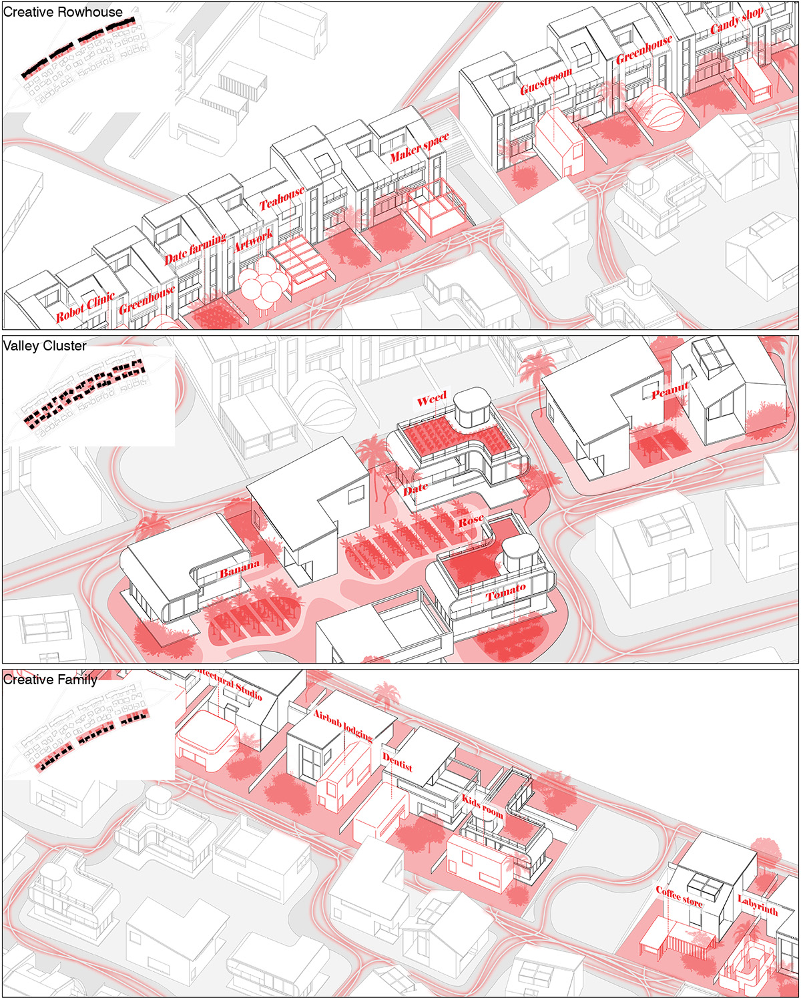
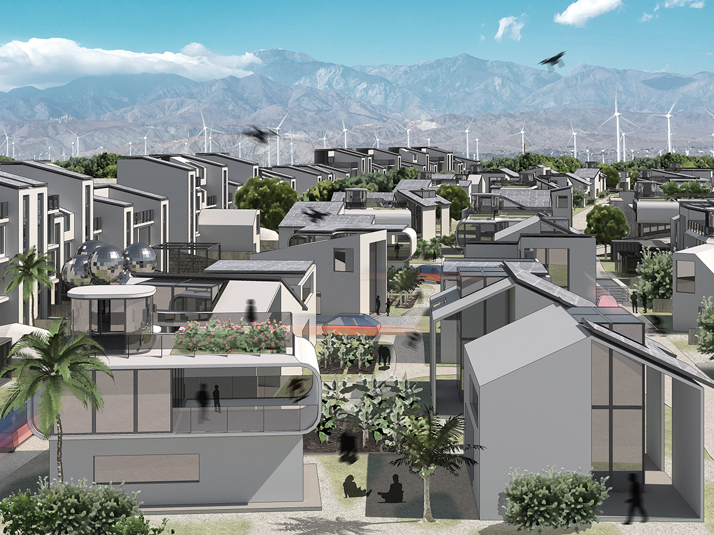
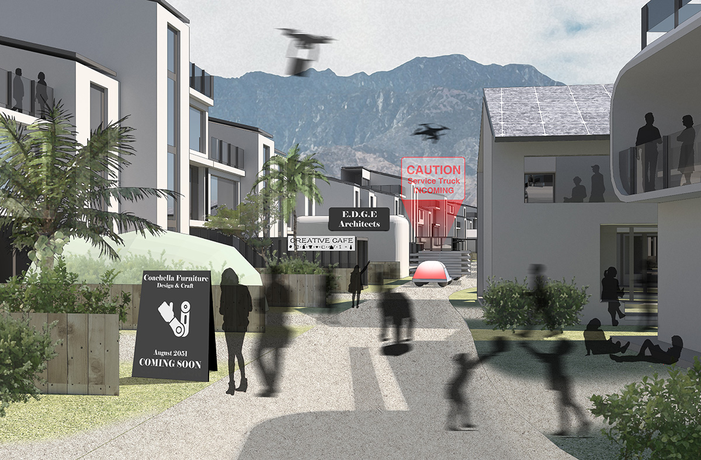
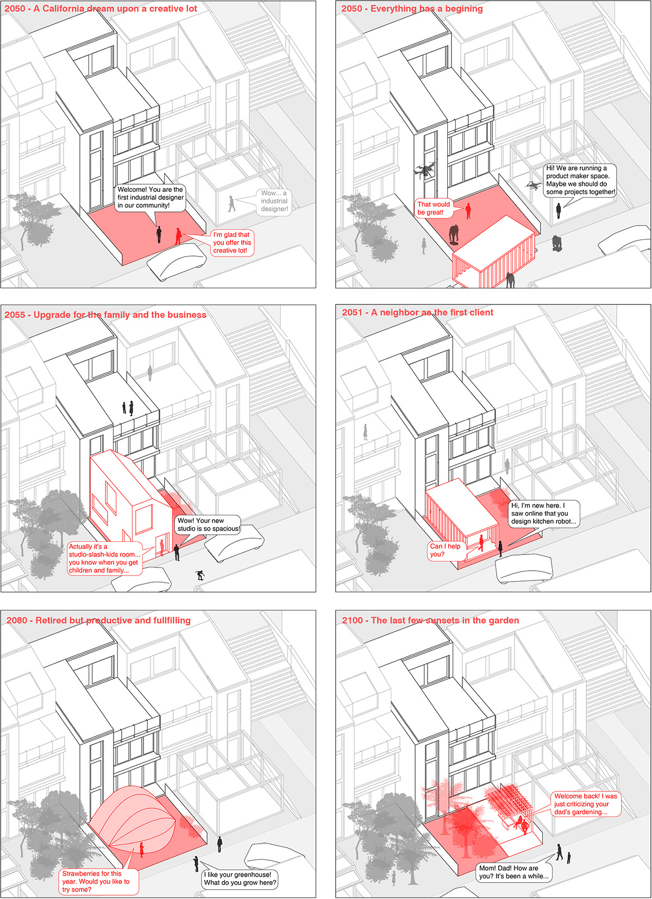

AUTONOMY ON THE EDGE
Our site locates in the west edge of the Desert Hot Spring and bounded by mountains and wind farms, margining a hypothetical edge that dissects the envisioned community from the city. One of the most significant environmental challenge is the strong and persistent wind from the northwest of Coachella Valley. By manipulating the earth of the desert landscape and creating artificial 'highlands' and ‘valleys’, a interiorized community is created where highlands serve as wind barriers each ‘valley’ houses a residential block. Between the built form and the dynamic landscape, food and energy productions offer a primary condition for a concept of autonomy.


Each block contains a secondary layer of wind barrier materialized by 3-story rowhouses at the northwest edge of the ‘valley’, protecting internal activities of 100 families. Nearly half of the proporties are assigned with creative lots at their doorsteps, where residents are encouraged to build temporary structures for small business and recreational facilities with supports from the communal maker facilities on artificial highlands. These lots incarnate internal social ties with residents contributing their businesses and services to the autonomous community. The other half of the proporties are grouped in green clusters with individual or shared kitchen gardens for organic foods. With increasing pedestrian traffics brought by vibrant internal activities, a universal surface shared by people, service robots, and AVs (under safe modes) is in demand. This surface will be a new form of public space sprawling between buildings.



